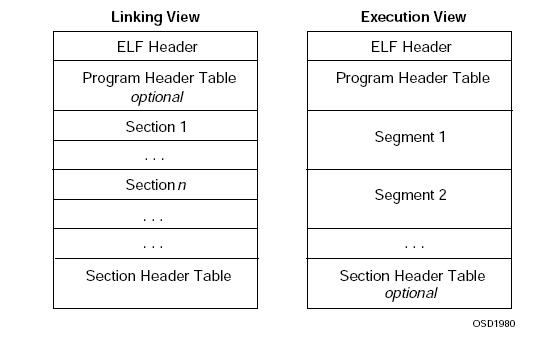

一.
在学习之前我们先看看ELF文件。

ELF分为三种类型：
.o 可重定位文件(relocalble file)，可执行文件以及共享库(shared library)，
三种格式基本上从结构上是一样的，只是具体到每一个结构不同。下面我们就从整体上看看这3种格式从文件内容上存储的方式，spec上有张图是比较经典的：如上图：
其实从文件存储的格式来说，上面的两种view实际上是一样的，Segment实际上就是由section组成的，将相应的一些section映射到一起就叫segment了,就是说segment是由0个或多个section组成的，实际上本质都是section。在这里我们首先来仔细了解一下section和segment的概念：section就是相同或者相似信息的集合，比如我们比较熟悉的.text .data .bss section，.text是可执行指令的集合，.data是初始化后数据的集合，.bss是未初始化数据的集合。实际上我们也可以将一个程序的所有内容都放在一起，就像dos一样，但是将可执行程序分成多个section是很有好处的，比如说我们可以将.text
section放在memory的只读空间内，将可变的.data section放在memory的可写空间内。
从可执行文件的角度来讲，如果一个数据未被初始化那就不需要为其分配空间，所以.data和.bss一个重要的区别就是.bss并不占用可执行文件的大小，它只是记载需要多少空间来存储这些未初始化数据，而不分配实际的空间。
可以通过命令 $ readelf –l a.out 查看文件的格式和组成。
二.
站在汇编语言的角度，一个程序分为：
数据段 –– DS
堆栈段 –– SS
代码段 –– CS
扩展段 –– ES
站在高级语言的角度，根据
APUE
，一个程序分为如下段：
text
data (initialized)
bss
stack
heap
1.一般情况下，一个
可执行二进制程序
(更确切的说，在Linux操作系统下为一个进程单元，在UC/OSII中被称为任务)在存储(没有调入到内存运行)时拥有3个部分，分别是代码段(text)、数据段(data)和BSS段。这3个部分一起组成了该
可执行程序的文件
。
★
★
可执行二进制程序
=
代码段(text)＋数据段(data)+BSS段
★
★
2.而当程序被加载到内存单元时，则需要另外两个域：堆域和栈域。图1–1所示为
可执行代码存储态
和
运行态
的结构对照图。一个正在运行的C程序占用的内存区域分为代码段、初始化数据段、未初始化数据段(BSS)、堆、栈5个部分。
★
★
正在运行的C程序
=
代码段+初始化数据段
(data)
+未初始化数据段(BSS)+堆+栈
★
★
3.在将应用程序加载到内存空间执行时，操作系统负责代码段、数据段和BSS段的加载，并将在
内存
中为这些段分配空间。栈亦由操作系统分配和管理，而不需要程序员显示地管理；堆段由程序员自己管理，即显示地申请和释放空间。
4.
动态分配与静态分配
，二者最大的区别在于
:1.
直到
Run–Time
的时候，执行动态分配，而在
compile–time
的时候，就已经决定好了分配多少
Text+Data+BSS+Stack
。
2.
通过
malloc()
动态分配的内存，需要程序员手工调用
free()
释放内存，否则容易导致内存泄露，而静态分配的内存则在进程执行结束后系统释放
(Text,
Data),
但
Stack
段中的数据很短暂，函数退出立即被销毁。
图1–1 （ 从可执行文件a.out的角度来讲，如果一个数据未被初始化那就不需要为其分配空间，所以.data和.bss一个重要的区别就是 .bss并不占用可执行文件的大小，它只是记载需要多少空间来存储这些未初始化数据，而不分配实际的空间 ）
三.
代码段 ––
text
（
code
segment/text segment）
text段在内存中被映射为只读，但.data和.bss是可写的。
text段是程序代码段，在AT91库中是表示程序段的大小，它是由编译器在编译连接时自动计算的，当你在链接定位文件中将该符号放置在代码段后，那么该符号表示的值就是代码段大小，编译连接时，该符号所代表的值会自动代入到源程序中。
数据段 –– data
data包含静态初始化的数据，所以有初值的全局变量和static变量在data区。段的起始位置也是由连接定位文件所确定，大小在编译连接时自动分配，它和你的程序大小没有关系，但和程序使用到的全局变量，常量数量相关。
数据段属于静态内存分配。
bss段––bss
bss是英文Block Started by Symbol的简称，通常是指用来存放程序中未初始化的全局变量的一块内存区域，在程序载入时由内核清0。BSS段属于静态内存分配。它的初始值也是由用户自己定义的连接定位文件所确定，用户应该将它定义在可读写的RAM区内，源程序中使用malloc分配的内存就是这一块，它不是根据data大小确定，主要由程序中同时分配内存最大值所确定，不过如果超出了范围，也就是分配失败，可以等空间释放之后再分配。
BSS段属于静态内存分配。
stack：
栈(stack)保存函数的
局部变量
（但不包括static声明的变量，
static
意味着
在数据段中
存放变量），
参数
以及
返回值
。是一种“后进先出”（Last
In First Out，LIFO）的数据结构，这意味着最后放到栈上的数据，将会是第一个从栈上移走的数据。对于哪些暂时存贮的信息，和不需要长时间保存的信息来说，LIFO这种数据结构非常理想。在调用函数或过程后，系统通常会清除栈上保存的局部变量、函数调用信息及其它的信息。栈另外一个重要的特征是，它的地址空间“向下减少”，即当栈上保存的数据越多，栈的地址就越低。栈（stack）的顶部在可读写的RAM区的最后。
heap:
堆(heap)保存函数内部动态分配内存，是另外一种用来保存程序信息的数据结构，更准确的说是保存程序的动态变量。堆是“先进先出”（First In first Out，FIFO）数据结构。它只允许在堆的一端插入数据，在另一端移走数据。堆的地址空间“向上增加”，即当堆上保存的数据越多，堆的地址就越高。

下图是APUE中的一个典型C内存空间分布图：
所以可以知道
传入的参数,局部变量,都是在栈顶分布,随着子函数的增多而向下增长.
函数的调用地址(函数运行代码),全局变量,静态变量都是在分配内存的低部存在,而malloc分配的堆则存在于这些内存之上,并向上生长.
举例1:
运行结果：
注意：
编译时需要–g选项，这样才可以看elf信息；
readelf –a a.out
查看这个执行文件的elf信息，摘录部分如下：重点注意其中data段，text段还要有bss段的地址，然后比较这个地址和上面的运行结果，是否是在elf文件的各个段的地址之内。
★ ★ ★ ★ 注意 静态变量初始化为零 和 全局静态变量初始化为零 的情况，都是存储在 bss段 ★ ★★★
从上面的elf文件可以看出，
[23] .bss NOBITS
08049a4c
000a4c
00001c 00 WA 0 0 4
[22] .data PROGBITS 08049a40 000a40 00000c 00 WA 0 0 4
[12] .text PROGBITS
08048310
000310
0002e8 00 AX 0 0 16
但是在结果中显示： BSS段, 静态局部变量, 初始化, local_C, addr: 0x08049a58
（ 0x08049a58 大于 0x 08049a4c 属于bss段 ）是初始化的静态局部变量但是却属于bss段，为什么？
原因是：local_C 是局部静态变量但是却初始化为零。这和没有初始化，默认是零的情况一样，都存储在bss段，如果初始化为其他的值，那么 local_C这个变量就会存储在data段。
四
可执行文件大小由什么决定？
可执行文件在存储时分为代码段、数据段和BSS段三个部分。
【例一】
程序1:
int ar[30000];
void main()
{
......
}
程序2:
int ar[300000] = {1, 2, 3, 4, 5, 6 };
void main()
{
......
}
发现程序2编译之后所得的.exe文件比程序1的要大得多。当下甚为不解，于是手工编译了一下，并使用了/FAs编译选项来查看了一下其各自的.asm，发现在程序1.asm中ar的定义如下：
_BSS SEGMENT
?ar@@3PAHA DD 0493e0H DUP (?) ; ar
_BSS ENDS
而在程序2.asm中，ar被定义为：
_DATA SEGMENT
?ar@@3PAHA DD 01H ; ar
DD 02H
DD 03H
ORG $+1199988
_DATA ENDS
区别很明显，一个位于.bss段，而另一个位于.data段，两者的区别在于：全局的未初始化变量存在于.bss段中，具体体现为一个占位符；全局的已初始化变量存于.data段中；而函数内的自动变量都在栈上分配空间。
.bss是不占用.exe文件空间的，其内容由操作系统初始化（清零）；而.data却需要占用，其内容由程序初始化 ，因此造成了上述情况。
以上仅仅做为学习只用！！